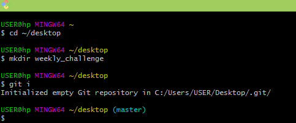

Git is a version control the state of the system that helps us to track various versions of our code. It does this by creating various snapshots of the state of the codes when we commit them.
There are various commands in git with different functions that enables us to use git effectively and efficiently. Some of which includes:
I think starting off of the favourite for me will be the git init. This is because without a git initialization in our folder, we won’t be able to carry out any git command required. With git initialization, we are able to do the various commands we require in order for our codes to be logged and tracked.
Also, we have the git add file_name and git commits message commands. Theyenable us to add the various files that we have our codes and a follow up message that indicates what we did to the said files even if new or modified.
We also have the git checkout. This helps us to make changes in our working directory and staging area respectively
The git alias. This helps in writing shortcut to our various git commands in the terminal.
The git remote add, helps us connecting our remote repository to our local repository. With this command, the local repository is informed of the remote repository somewhere where we want to push our codes to.
Most of the git commands are important and favourites depending on what you want to achieve at a particular point in time during your work.
The flags includes m, r, f,
The git init, shortened as git i because i have already used the git alias command to make a shortened version of the command to enhance productivity while typing. 